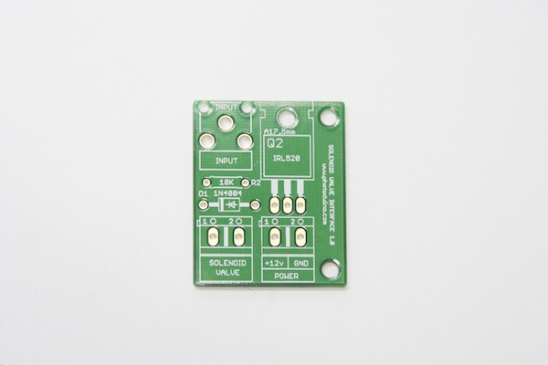
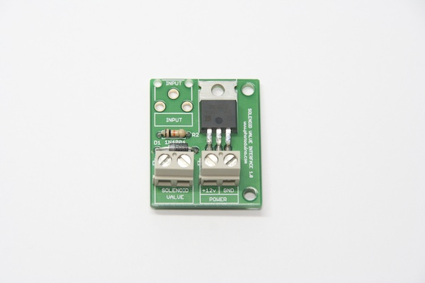
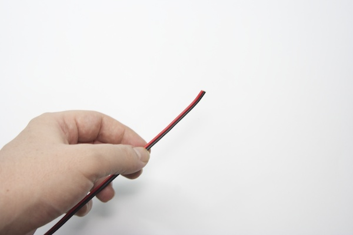
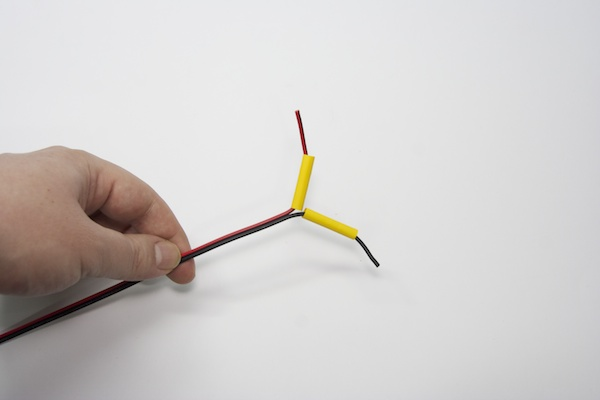
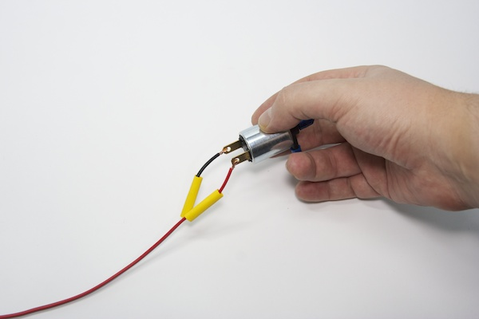
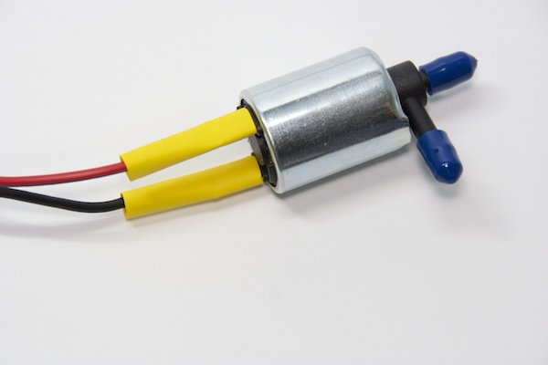
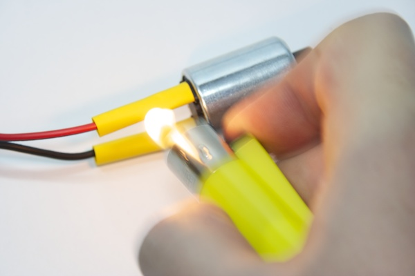

Making this circuit is so easy. You need the components of course, but also you need some tools like soldering iron, tin, cutting pliers and a pair of screwdrivers (with flat and star tips).
Get this comic for easy learning “Soldering is Easy”
The PCB

Components
First, you have to solder the 1ok resistor (brown, black and orange bands). Has no polarity and is only one. In the PCB is masked as R2.

Next step is solder the 1N4004 diode. It has a gray band at one end to indicate their polarity. You place it as shown in the next picture.

Now you have to solder the MOSFET IRL520. It has polarity. You place it as shown in the next picture.

Now solder the screw terminals.

And last, solder the RCA connector.

Solenoid Valve wiring
To connect the solenoid valve, first you have to solder to a couple of wires. Solenoid valve has no polarity.


Take apart a couple of heat shrink tubes to isolate the connections later.







Solenoid valve and power supply connections


Connection to Photoduino
The connection is made by a RCA cable to the DEVICE port of Photoduino.

Assemble example
In the photo above you can see how to use the syringe as a reservoir of liquid using the plastic microtube to connect to the input of the solenoid. Although not included in the kit the other materials you can see int the photos, I put them as an example of how you can assemble the system.


Usage video
The next video show the whole system working.